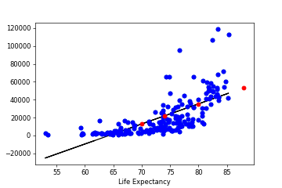

Portfolio
Isabel Lavenstein | Student ID: 2077550
Week 1
Our first task was to embed two interactive charts from the
Rapid Charts repository and display them on our site.
UK budget deficit
This first chart shows the UK budget deficit over time
UK CO2 emissions
This second chart looks carbon dioxide emissions by sector
These charts were created by using the exemplar code from Rapid Charts.
Week 2
Our next task was to embed two charts relating to IMF lending 1984-2022, one replicating that of an FT article and one improving this chart to adjust for inflation.
IMF Loans Outstanding
This first chart shows IMF outstanding loans between 1984-2022 in nominal terms
IMF Loans Outstanding as Percentage of GDP
This second chart shows IMF outstanding loans between 1984-2022, adjusted for inflation
These charts shows that relative to GDP (and hence affordability), the IMF lent most in 1984. This suggests that 2022 was infact not the riskier year for investment, as lending was only greatest in absolute terms.
These charts were created by hosting data on my GitHub repository after transforming it at the analysis stage.
Week 3
This weeks task was to convert csv data to a dictionary format (using python) to be able to visualise it.
I changed the visual encoding between the two charts by presenting the information in a bar and a line chart.
The bar chart is hard to interpret as the bars are stacked instead of offset due to the large number of data points-
this justifies the use of a line chart for time series with lots of observations.
Week 4
This weeks task was to convert csv data to a dictionary format (using python) to be able to visualise it. The analysis was conducted in
Google Colab
London 2012 Olympics Medal Table
This chart uses an html scraper of a table displayed online at ESPN. I chose this website becase it was clearly coded with the table tag, which I could copy, save as an html and then read in pandas.
Week 5
This weeks task was to batch download data from the ONS using loops. I conducted the analysis using python in
Google Colab.
Unemployment Dashboard
This chart tracks two measures of inflation, CPI and RPI, between 1989-2022
Week 7
This weeks task was to produce a new base map using GeoJSON, and then to convert this to a choropleth map by matching the map GeoJSON with
another dataset to producing a colour tinted map.
GB Base Map
Median House Prices in Great Britain
In my visualisation, I added a slider to allow the user to see how prices change over the last 15 years. Evidently, prices have
risen quickly, with the increase concentrated around London and the South East.
Week 8
This weeks task was to produce two charts that support or refute an argument at the
Festival of Economics.
Sarah Smith argued that the cost of living crisis is most detrimentally affecting
those at the bottom end of the income distribution, and that their experienced inflation
is likely much higher than the reported 10% average for all households.
Causes of Rising Inflation
Breakdown of Spending by Income Quartile
I created two charts in support of this statement. The first chart shows that housing costs and food are the largest contributions to
total CPIH inflation. Chart B highlights how these two goods take up a greater proportion spending for those on lower incomes.
Week 9
This weeks task was to produce two charts that use advanced analytics such as scatter and bubble plots,
histograms, detrended shock analysis, Diff in Diff visualisation or a heat map.
Heat Map of House Price Affordability
For the first chart, I looked at instances of house price growth and average income growth within each year.
The concentration of the heat does not offer any clear conclusions, but their are far more occurances of house
price growth exceeding income growth.
Trellis Chart of Country House Prices
The second chart uses a Trellis to show how across the UK, the 4 countries have seen similar patterns in house
price growth since 2005, but that average prices in England are considerably higher, likely due to the influence
of London driving up averages.
Weeks 10 and 11
This weeks task was to conduct an applied data analysis using two of the four learnt machine learning techniques.
Supervised Learning- Regression
<

I wanted to test the relationship between Income and Life Expectancy for a full sample of countries in 2022.
I used sklearn to run a linear regression, and found a positive relationship between the two variables by fitting the data.
Unsupervised Learning- Dimensionality Reduction
I wanted to use Dimensionality Reduction through Principal Component Analysis to try to determine whether regions could be identified by their development.
This was run using 5 key development indicators, which can be seen in the tooltip.
This machine learning analysis shows countries within the same continent are roughly grouped together.
This is particularly effective for Europe and Africa .
The analysis was conducted using Python in
Google Colab.